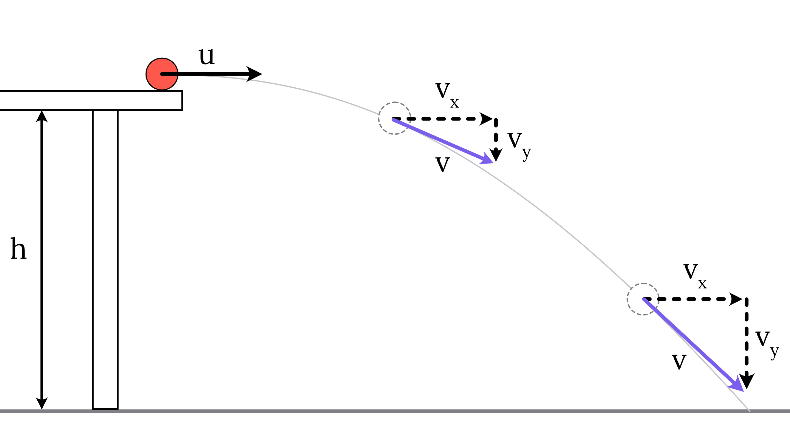
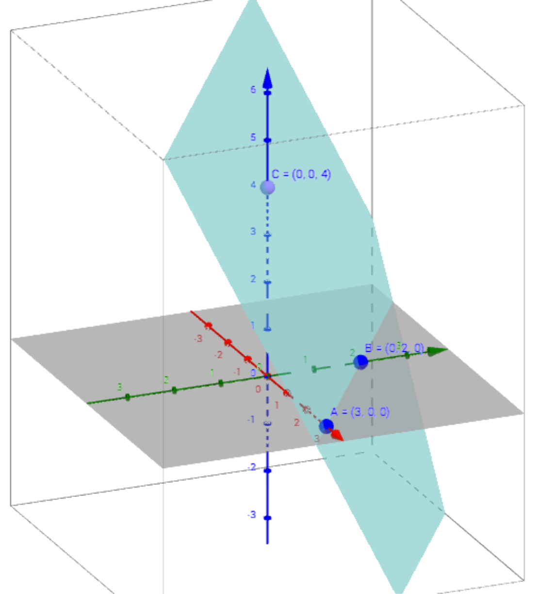

NewtonSimAI
A screenshot-to-simulation workflow for freefall and projectile-motion problems.
Explore NewtonSimAIStudent · Applied mathematician · Musician
I’m Harish Divakar, a senior at Troy Athens High School pursuing applied and computational mathematics, data science, and continued music performance.

Selected work
Projects connecting computer science and mathematics to real-world questions.

A screenshot-to-simulation workflow for freefall and projectile-motion problems.
Explore NewtonSimAI
A linear-algebra study of the long-term effects of an urban revitalization policy.
Explore Urban PulsePortfolio overview
This portfolio brings together my background, projects, awards, and achievements to show who I am and how I apply what I learn.
Read more about meBrief highlights
A 4.0 unweighted GPA, National Merit Semifinalist recognition, AP Scholar awards, first-division music ratings, competition experience, and nearly 20 hours of volunteering.